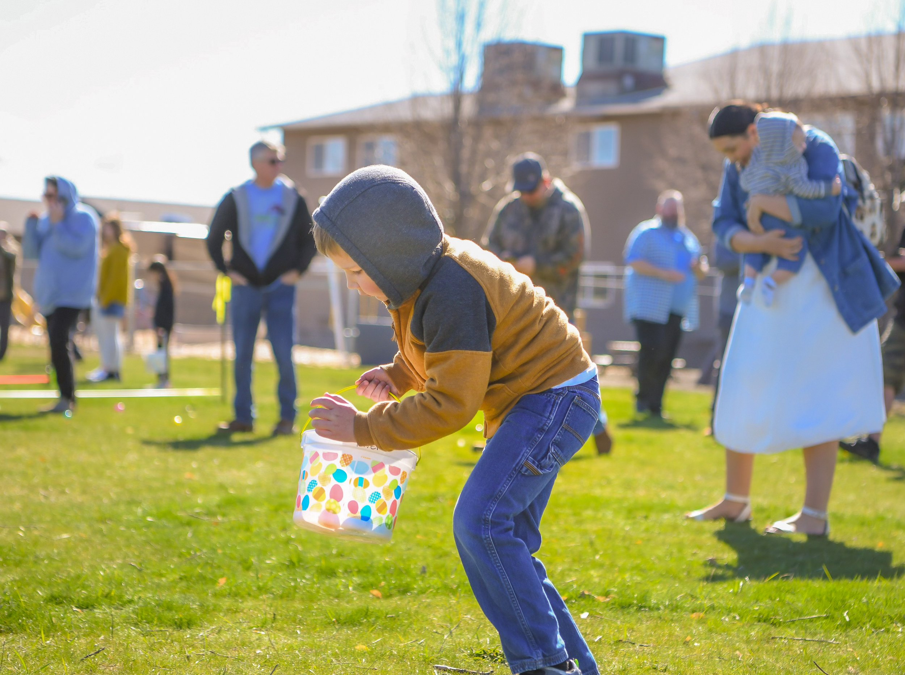
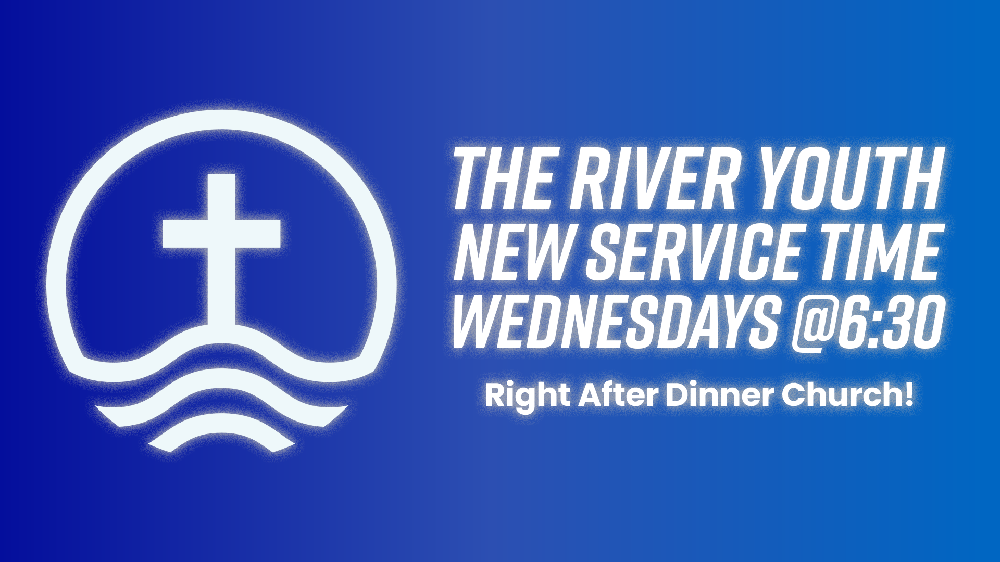

Paragraph
Pastors Steve and Tracey came to The River in February 2023. Originally from Wallace, Idaho Steve is a passionate visionary with a heart for the people of North Idaho. Beginning his career in management helped to hone his leadership gifting. His goal at The River is to lead people into a loving and life-giving relationship with Jesus Christ by building servant leaders, reaching the lost, and helping others discover and fulfill the call of God on their lives.
Steve and Tracey have a heart for adoption and foster care ministries. They have four adopted children at home — Gabriel, Moriah, Israel, and Ezekiel — and hope to continue to foster and adopt for the rest of their lives.
Since Steve and Tracey have four children, they have no spare time, but when they do you will find them watching the Dallas Cowboys win, playing board games with their family, smoking ribs, and dreaming of visiting Galaxy's Edge at Disneyland.

We believe that children are a treasure from the Lord. Here at The River Church, we want your kids to be safe, make friends, and have fun. We aim to take every opportunity to interact with and teach children about Jesus. Leaders lead by example and show the abundant love of Jesus.
Sundays @ 9:30 & 11:00 AM
We believe in the importance of reaching the next generation for Christ and raising them up in the way they should go through fellowship and mentorship. At River Youth, we are doing exactly that every Wednesdays @ 6:30 pm. Join us for a time of learning, fun, and fellowship!
Wednesdays @ 6:30 PMThe River Church is part of the Assemblies of God fellowship. Our doctrine follows the AG Statement of Fundamental Truths.
Description